Sample Data & Visualisation Programs
International Marketing Strategy · Companion sample page for the data analytics module: Chapter 2 “Data Types”, Chapter 3 “Data Preparation”, Chapter 4 “Data Description and Visualisation”, Chapter 5 “Machine Learning” and Chapter 15 “Big Data in Marketing” · 2026
Chapter 2 · Data Types samples (10 programs, line-by-line comments)
| Slide | Data type | Program (line-by-line comments) | Sample data |
|---|---|---|---|
| Frame 10 | Numeric data (continuous / discrete) Histograms and box plots (outliers) of daily log returns and trading volume over 800 trading days, plus the discrete count distribution of daily orders. |
01_datatype_numeric.py | numeric_samples.csv |
| Frame 12 | Categorical data (nominal / ordinal) Frequency bar charts of industry (nominal, 6 categories) and credit rating (ordinal, AAA–C), plus an industry × rating cross heatmap. |
02_datatype_categorical.py | categorical_samples.csv |
| Frame 13 | Structured / semi-structured / unstructured Side-by-side comparison of three forms: a table with fixed fields, nested JSON with optional fields, and natural-language text without fields. |
10_datatype_structured_unstructured.py | structured_orders.csv, semistructured_orders.json, unstructured_note.txt |
| Frame 15 | Text data Top-15 term frequencies after tokenising 20 financial news briefs, plus per-document character counts and the length distribution (which drive truncation and padding decisions). |
03_datatype_text.py | text_samples.csv |
| Frame 16 | Image data A mosaic of 3 classes × 4 grayscale 32×32 samples, three-channel decomposition of a colour image, and pixel intensity distributions. |
04_datatype_image.py | image_samples.npy, image_labels.npy |
| Frame 17 | Audio data 8 kHz, 1-second pure tone / chirp / amplitude-modulated noise: time-domain waveforms, short-time Fourier spectrograms and envelopes. |
05_datatype_audio.py | audio_tone_440.wav, audio_chirp_200_2000.wav, audio_am_noise.wav |
| Frame 18 | Video data A 12-frame 48×48 sequence (extracted PNG frames in data/video_frames/), inter-frame difference motion detection and a per-frame brightness signal. |
06_datatype_video.py | video_frames.npy |
| Frame 19 | Graph / network data Force-directed layout of a 60-node BA scale-free network (node size and colour encode degree) and a log-log degree distribution. |
07_datatype_graph.py | graph_edges.csv, graph_nodes.csv |
| Frame 20 | Spatiotemporal trajectory data 3 trajectories × 120 points around Nanshan, Shenzhen: latitude/longitude paths, hexbin spatial density and a speed time series. |
08_datatype_spatiotemporal.py | spatiotemporal_tracks.csv |
| Frame 23 | Cross-section / time series / panel A ranked bar chart for the cross-section, 120 months of CPI with a 12-period moving average, and small multiples for an 8-firm × 10-year panel. |
09_datastructure_cross_time_panel.py | structure_cross_section.csv, structure_time_series.csv, structure_panel.csv |
How to run: pip install -r code/requirements.txt → cd code && python run_all.py;
samples are written to data/ and figures to figures/. The random seed is fixed at 20260917, so every run produces exactly the same results.
Lecture 2 example figures

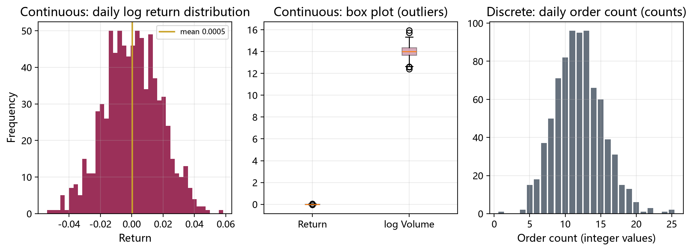

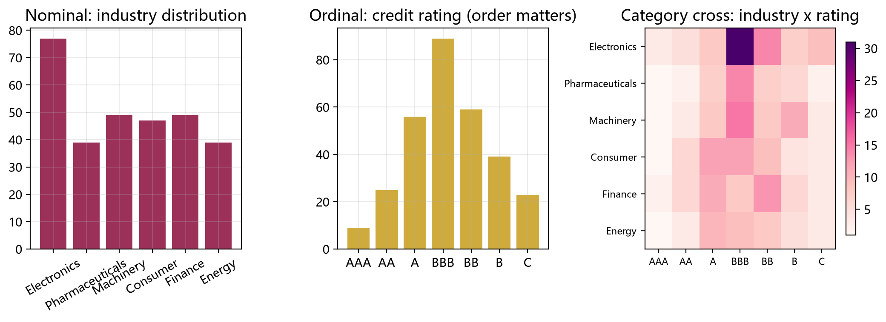

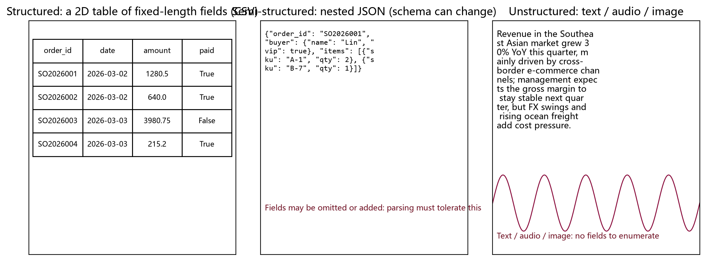

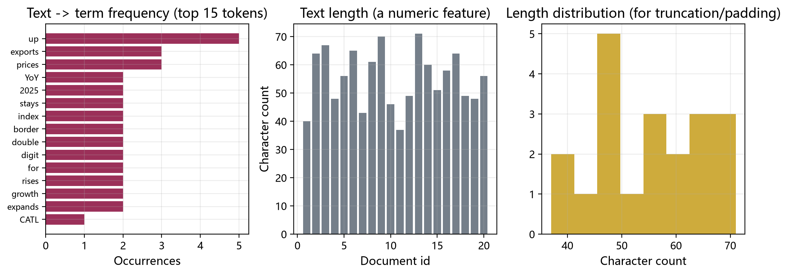

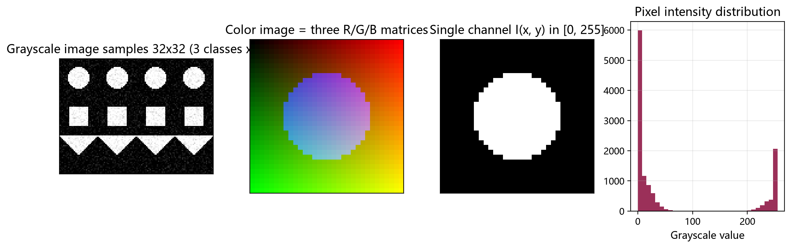

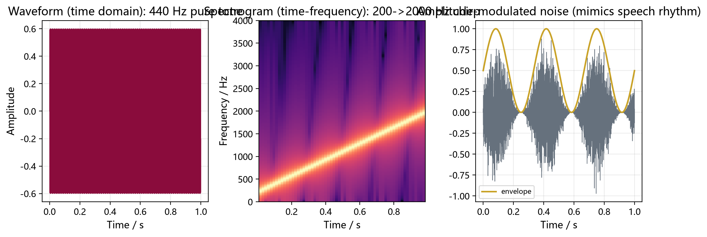

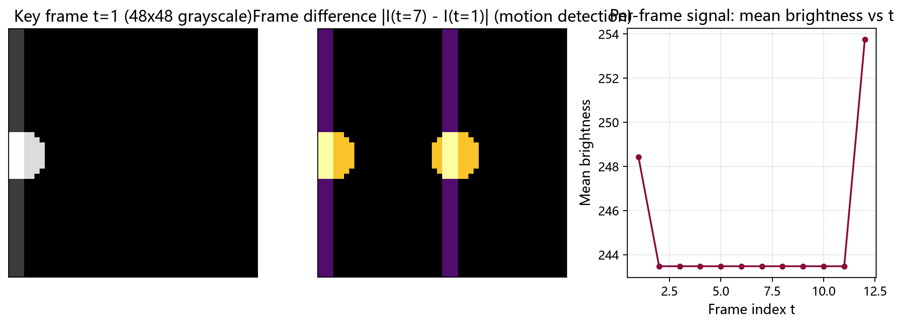

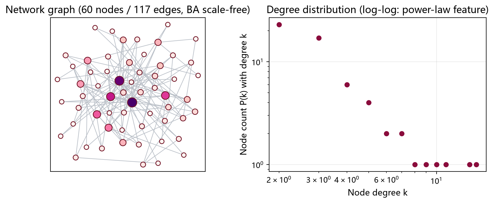

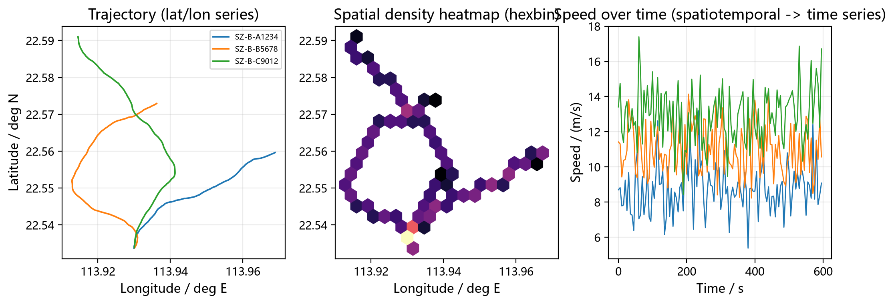

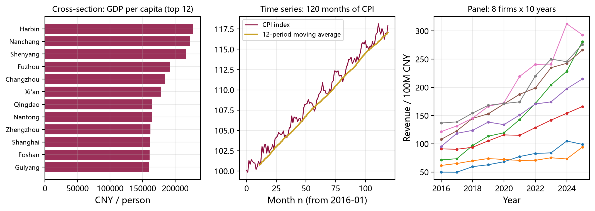
Chapter 3 · Data Preparation samples (10 programs, line-by-line comments)
How to run: pip install -r code/lecture03/requirements.txt → cd code/lecture03 && python run_all.py;
samples are written to data/lecture03/ and figures to figures/lecture03/. The random seed is fixed at 20260317, so every run produces exactly the same results.
| Slide | Preparation topic | Program (line-by-line comments) | Sample data |
|---|---|---|---|
| Frame 15 | Quality profile dashboard 600 rows of dirty orders: 18 duplicate primary keys, 7 spellings of the city, 6 spellings of the payment status, 70 rows with missing quantity — five quality dimensions quantified in one pass. |
l3_01_quality_profile.py | l3_orders_dirty.csv, l3_quality_scorecard.csv |
| Frame 22 | Join semantics inner 5 · left 6 · right 8 · outer 9 · union 10 rows: result tables and row-count changes for the five operations; includes a validate error demonstration. |
l3_03_join_types_validate.py | l3_customers.csv, l3_orders.csv, l3_dataset1.csv, l3_dataset2.csv, l3_dataset3.csv, l3_dataset4.csv |
| Frame 26 | concat and schema alignment Order extracts from two periods: naive concatenation gives 9 columns (all hollow) → 7 clean columns after alignment; two assertions on row count and primary key. |
l3_02_join_concat.py | l3_orders_2026Q1.csv, l3_orders_2026Q2.csv, l3_orders_combined.csv, l3_concat_accounting.csv |
| Frame 29 | Pivot tables, crosstabs and binning crosstab frequencies, pivot_table aggregation, cut equal-width binning and qcut equal-frequency binning (6/6/6/6). |
l3_04_reshape_toolbox.py | l3_sales_wide.csv, l3_sales_long.csv, l3_sales_pivot.csv, l3_sales_long_enriched.csv |
| Frame 30 | Wide / long / pivoted layouts Three layouts of 4 stores × 6 months, including a lossless wide→long→wide round-trip assertion. |
l3_04_reshape_toolbox.py | l3_sales_wide.csv |
| Frame 38 | Three outlier methods IQR 22 rows / Z 10 rows / robust Z 17 rows / isolation forest 13 rows; only 10 rows flagged by all four methods; three treatments compared. |
l3_06_outliers_iqr_z_iforest.py | l3_income_outliers.csv, l3_outlier_treatment.csv |
| Frame 41 | Before and after cleaning 600 → 582 rows; missing 70 → 0 (median imputation + missing-indicator column); outliers flagged rather than silently deleted. |
l3_05_cleaning_pipeline.py | l3_orders_clean.csv, l3_cleaning_log.csv |
| Frame 46 | Structural errors and category normalisation 7 spellings of the city → 2 cities; the alias mapping table is itself a deliverable. |
l3_05_cleaning_pipeline.py | l3_city_names_raw.csv, l3_city_names_map.csv |
| Frame 52 | Missingness matrices and mechanism bias Missingness matrices for the MCAR / MAR / MNAR mechanisms and the naive mean bias −0.9% / −14.4% / −5.6%. |
l3_07_missing_mechanisms.py | l3_missing_bias.csv, l3_income_missing_MCAR.csv, l3_income_missing_MAR.csv, l3_income_missing_MNAR.csv, l3_missing_panel_sample.csv, l3_missing_panel_coverage.csv |
| Frame 57 | Before and after imputation: distributions and relationships Mean imputation collapses the distribution into a spike; regression / KNN / MICE stay closer to the true distribution; variance shrinkage is clearly visible. |
l3_08_imputation_compare.py | l3_income_complete.csv, l3_income_missing.csv, l3_imputation_metrics.csv, l3_imputation_means.csv |
| Frame 62 | Balanced panel T=11, n=2 Revenue paths for two firms over 11 months and an individual × time heatmap (every cell is observed). |
l3_09_panel_balance.py | l3_panel_balanced.csv |
| Frame 68 | Panel heatmaps before and after completion T1=9 / T2=11 / T3=8 with block missingness → interpolation by individual (2 cells) and flagging; 5 cells cannot be completed because the period does not exist. |
l3_09_panel_balance.py | l3_panel_unbalanced.csv, l3_panel_repaired.csv |
| Frame 72 | Transformation and standardisation effects Revenue with skewness ≈ 2.7 becomes near-symmetric after log1p; all 12 schema assertions pass. |
l3_10_transform_assert.py | l3_income_skewed.csv, l3_transform_summary.csv, l3_schema_report.csv |
Lecture 3 example figures

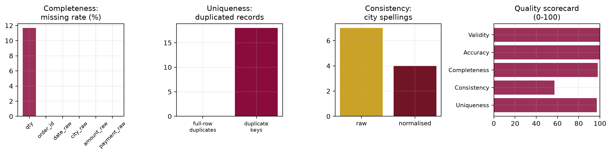

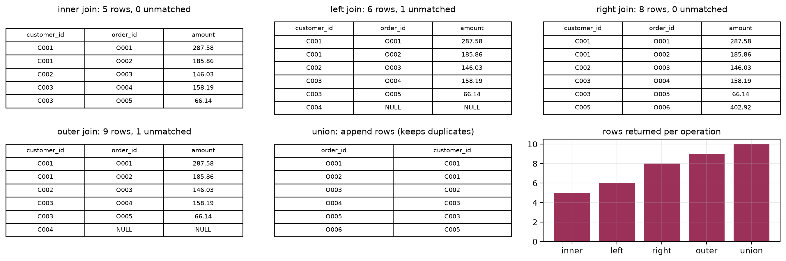

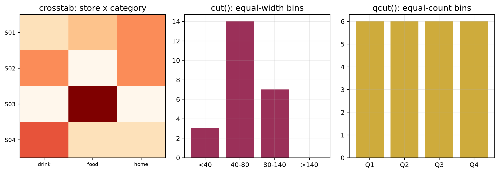

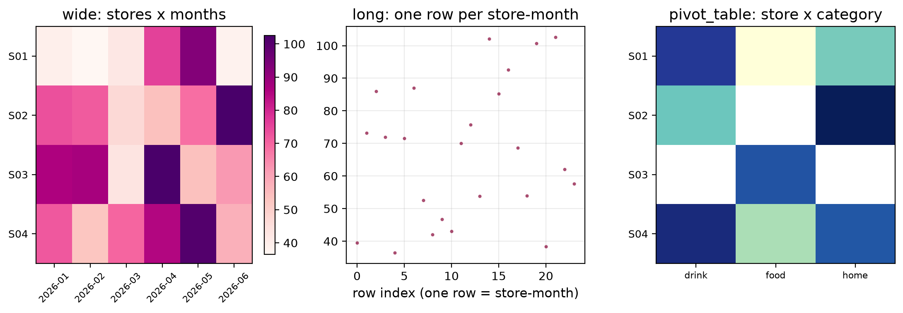

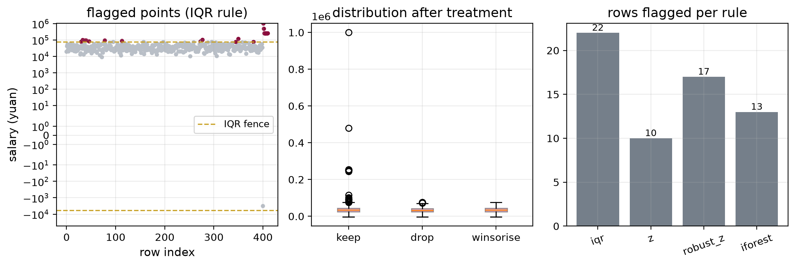

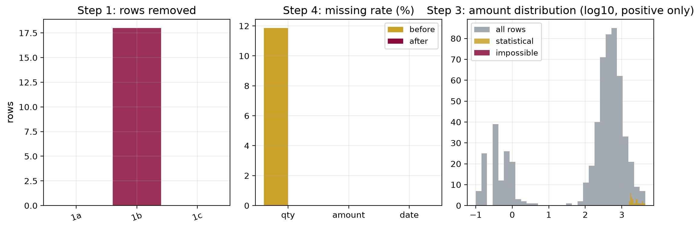

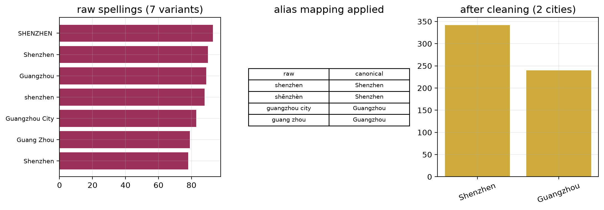

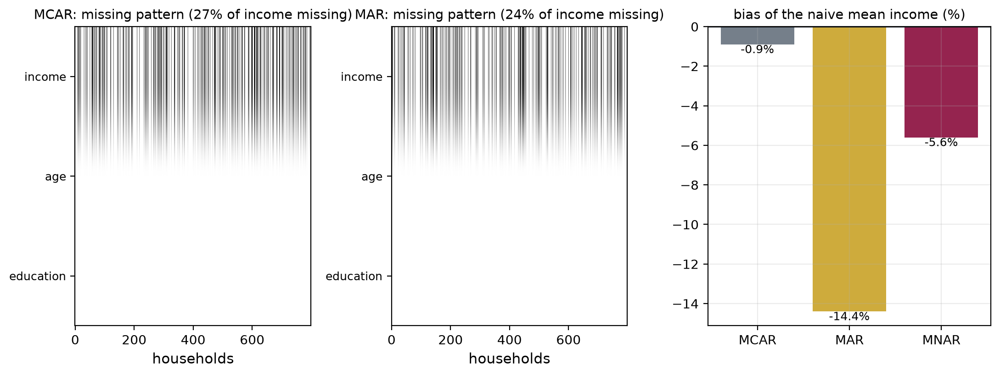

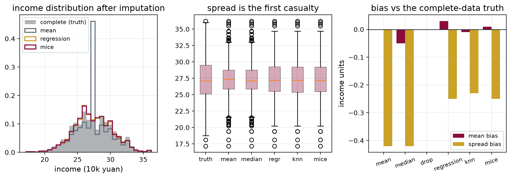

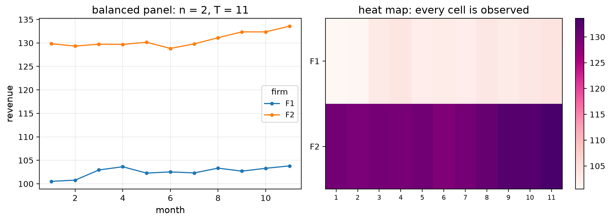

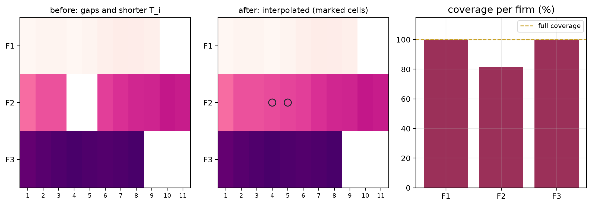

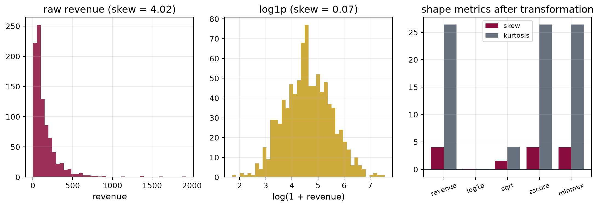
Chapter 4 · Data Description and Visualisation samples (13 programs, line-by-line comments)
How to run: pip install -r code/lecture04/requirements.txt
pip install -r code/lecture05/requirements.txt → cd code/lecture04 && python run_all.py;
samples are written to data/lecture04/, figures to figures/lecture04/ and interactive HTML to figures/lecture04/interactive/.
The random seed is fixed at 20260417, so every run produces exactly the same results; everything is done in Python (no Power BI / Tableau).
| Slide | Visualisation topic | Program (line-by-line comments) | Sample data / interactive output |
|---|---|---|---|
| Frame 13 | Document coverage and data dictionary 500-row survey sample: 20 documentation elements scored one by one (20/20 completed), field non-null rates and an auto-generated data dictionary (9 fields). |
l4_01_docs_metadata.py | l4_survey_raw.csv, l4_data_dictionary.csv, l4_data_dictionary.md, l4_docs_coverage.csv |
| Frame 23 | Robustness of central tendency 1,000 income observations plus 3 outliers: the mean moves +12.5% while the median moves only +0.7%; mean / median / standard deviation / IQR / MAD compared. |
l4_02_descriptive_stats.py | l4_income_skewed.csv, l4_descriptive_table.csv |
| Frame 24 | Dispersion and distribution shape Same mean, different dispersion; three dispersion measures compared; skewness (left-skewed / symmetric / right-skewed); kurtosis (heavy-tailed t(3) / normal / thin-tailed uniform). |
l4_02_descriptive_stats.py | l4_descriptive_table.csv |
| Frame 28 | Five charts for one variable Histogram, box plot, violin plot, ECDF and stem-and-leaf plot of city GDP: changing the chart type changes the view, and the binning drives the impression. |
l4_05_chart_zoo.py | l4_city_gdp.csv |
| Frame 37 | Restricted range and correlation 220 country pairs in a gravity model: full-sample Pearson −0.589 / Spearman −0.606, falling to −0.200 / −0.213 once only the nearest 25% of partners are kept. |
l4_03_correlation_crosstab.py | l4_trade_pairs.csv, l4_correlation_pearson.csv, l4_correlation_spearman.csv |
| Frame 38 | Multivariate views A 60-firm × 8-year panel: correlation-matrix heatmap, scatter coloured by industry, small multiples of industry revenue, and conditional ROA distributions by industry. |
l4_04_multivariate.py | l4_firm_panel.csv, l4_conditional_roa.csv |
| Frame 52 | Chart zoo overview Bar chart, distribution chart, trend chart, scatter plot, correlation matrix, ranked bar chart and network graph, plus a panel with a "pick the chart from the question" rule of thumb. |
l4_05_chart_zoo.py | l4_city_gdp.csv, l4_category_counts.csv |
| Frame 64 | Interactive vs static charts 132 months × 4 energy categories: static charts for final reports, interactive HTML (line / scatter / Sankey) for exploration and in-class demonstration. |
l4_06_plotly_interactive.py | l4_energy.csv Energy trend (interactive) ↗ Income scatter (interactive) ↗ Sankey diagram (interactive) ↗ |
| Frame 66 | Python dashboard KPI cards (sample size, satisfaction, repurchase rate, median GDP per capita) + a 2×2 panel; plotly subplots exported as a single-file HTML, replacing BI tools. |
l4_07_dashboard.py | l4_dashboard_kpi.csv Dashboard (interactive) ↗ |
| Frame 70 | choropleth and symbol maps 31 provincial units and 24 economies: GeoJSON choropleth, total-value bubble map, world choropleth and trade-flow map. |
l4_08_geo_maps.py | l4_province_gdp.csv, l4_country_indicators.csv, china_provinces.geojson World choropleth (interactive) ↗ Trade flows (interactive) ↗ |
| Frame 72 | Spatial autocorrelation Moran scatter 4-nearest-neighbour weights matrix: Moran's I = 0.659, HH 16 / LL 13 / LH 2 — GDP per capita shows clear positive spatial clustering. |
l4_08_geo_maps.py | l4_moran.csv |
| Frame 79 | Six misleading techniques and their fixes Truncated y-axis, bubble sized by radius, dual-axis spurious correlation, selective intervals, pie charts for similar shares, and dropped uncertainty: misleading on the top row, corrected on the bottom row. |
l4_09_misleading.py | l4_ab_test.csv |
| Frame 83 | Four views of uncertainty B=2000 bootstrap resamples: error bars, difference distribution and interval ([−0.0056, +0.0456], straddling 0), a time-series confidence band, and a fan forecast band. |
l4_10_uncertainty.py | l4_ab_test.csv, l4_uncertainty_summary.csv |
| Frame 85 | Palette and greyscale accessibility Colour / greyscale comparison for three palettes, perceived luminance distributions and a WCAG contrast matrix (≥4.5 passes), with a 12-item accessibility checklist. |
l4_11_accessibility.py | l4_category_counts.csv, l4_accessibility_report.csv, l4_accessibility_checklist.csv |
| Frame 89 | Three dimensionality-reduction projections One 12-dimensional customer dataset: PCA (first two components 21.8% + 10.5%), t-SNE and UMAP projections, with a scree plot and neighbourhood fidelity (t-SNE 0.89 / UMAP 0.85 / PCA 0.75). |
l4_13_highdim.py | l4_highdim_customers.csv, l4_highdim_projection_metrics.csv 3-D embedding (interactive) ↗ |
| Frame 93 | Parallel and clustered profiles Parallel coordinates for 8 standardised features (mean profiles of three groups), a correlation heatmap reordered by hierarchical clustering, and a radar chart included for illustration only. |
l4_13_highdim.py | l4_highdim_customers.csv |
| Frame 94 | Model interpretability visualisation Random forest churn prediction: permutation importance (days since last purchase 0.195, 10 repeats with error bars), PDP average marginal effects and 60 ICE individual curves. |
l4_13_highdim.py | l4_highdim_importance.csv |
| Frame 98 | Report main figure and captions Statistical table + four-panel report figure + self-contained captions exported in one pass: axis truncation, missing-data handling, error bars and sample size are all stated in the captions. |
l4_12_report_pipeline.py | report/table1_descriptive.csv, report/table2_channel.csv, report/captions.md |
Lecture 4 example figures

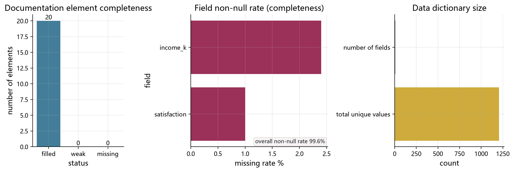

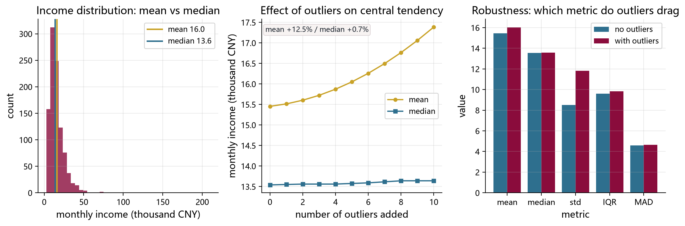

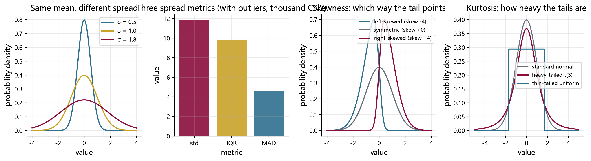

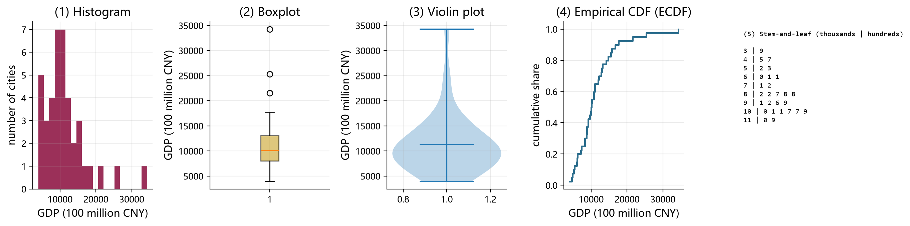

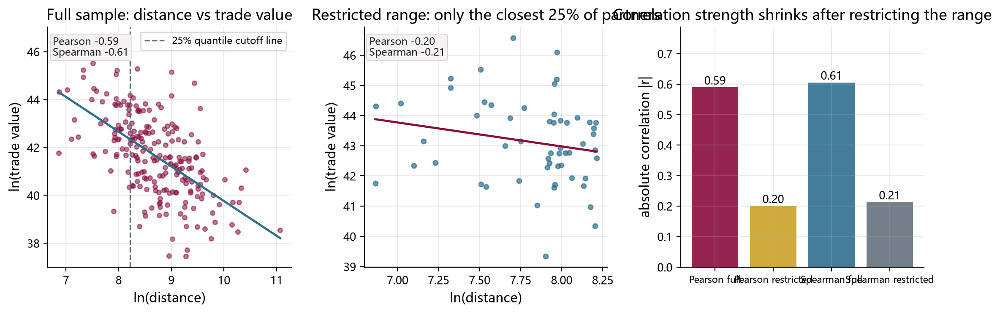

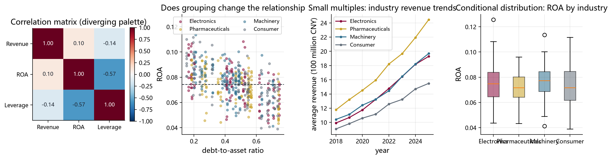

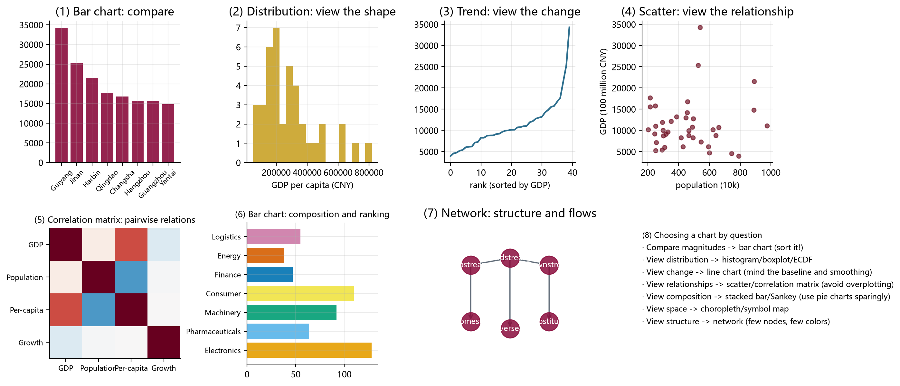

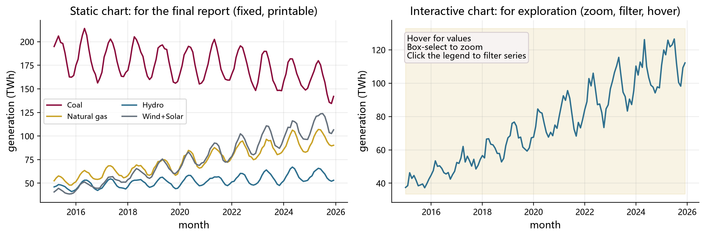

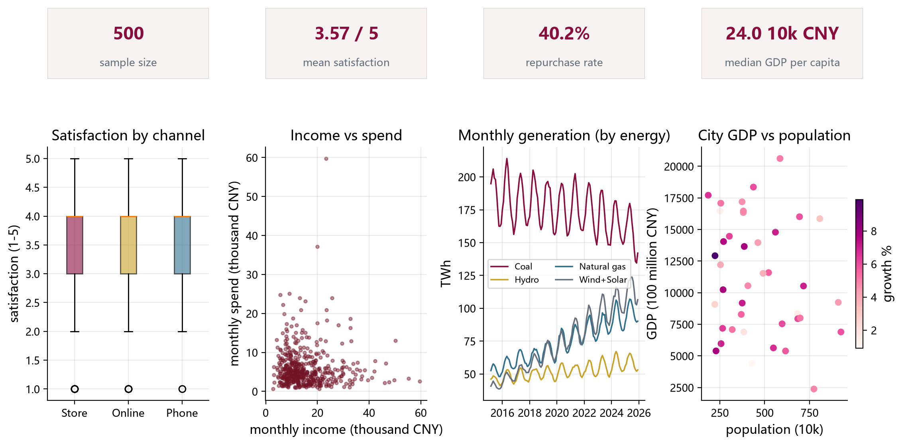

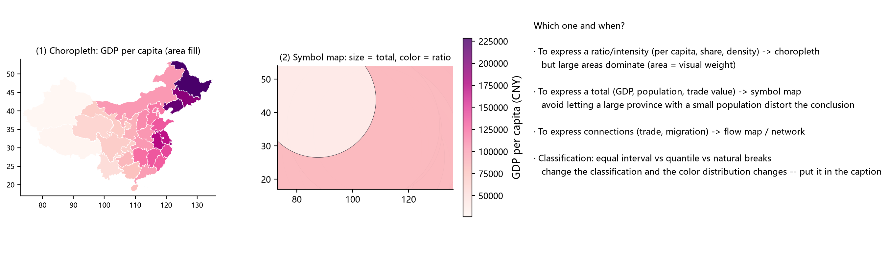

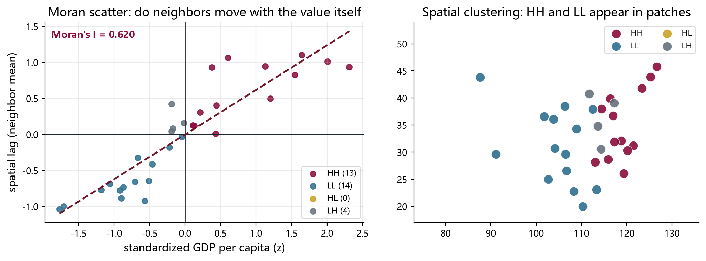

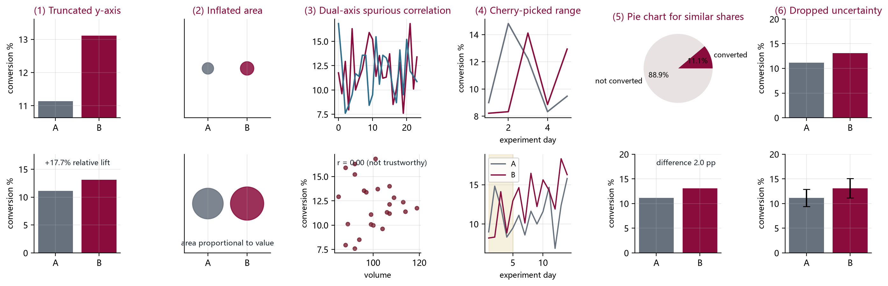

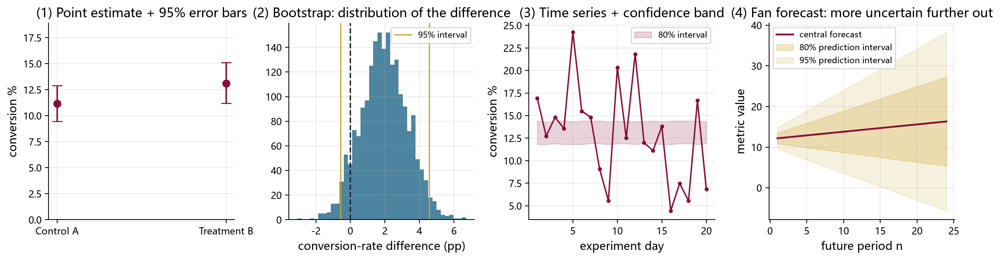

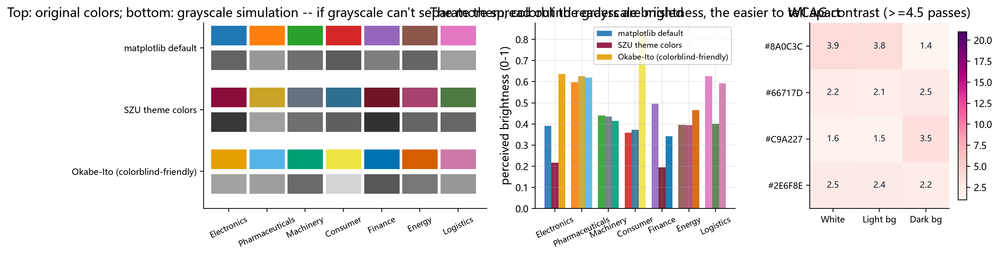

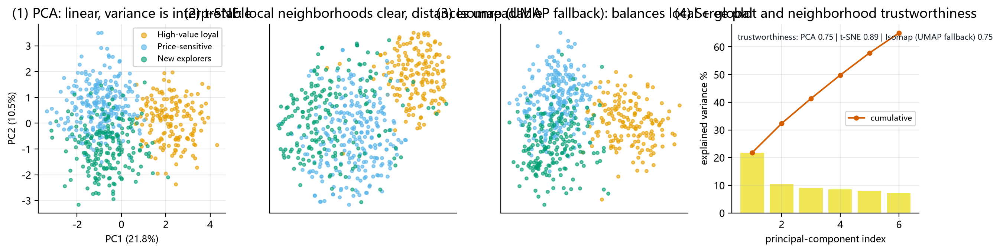

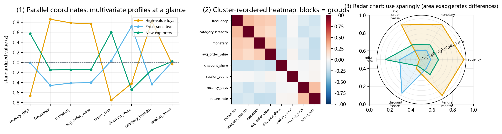

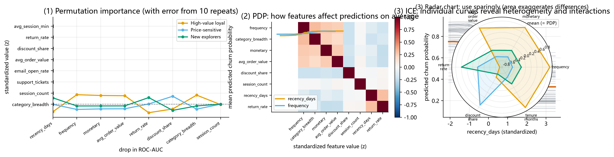

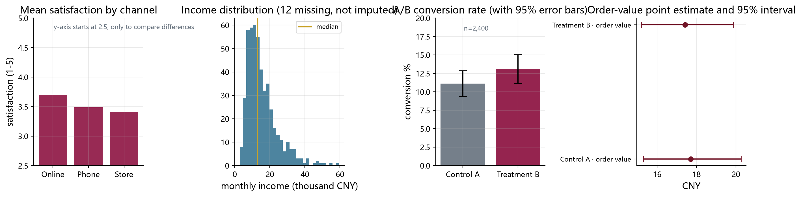
Chapter 5 · Introduction to Machine Learning samples (12 programs, line-by-line comments)
How to run: pip install -r code/lecture05/requirements.txt → cd code/lecture05 && python run_all.py;
samples are read from code/lecture05/data/ and the run logs and model card are written to code/lecture05/artifacts/.
Every script is the program shown on the corresponding code frame of the chapter.
| Program (line-by-line comments) | What it demonstrates | Outputs |
|---|---|---|
| l5_01_pipeline_baseline.py | An end-to-end scikit-learn pipeline and a baseline | Model pipeline, baseline score, run log |
| l5_02_cv_and_leakage.py | Cross-validation done right, and three ways to leak | CV results, leakage demonstration |
| l5_03_overfitting_curves.py | Complexity, under/overfitting and learning curves | Complexity table, learning curves |
| l5_04_metrics_thresholds.py | Classification metrics, decision thresholds and calibration | Threshold table, calibration curve |
| l5_05_regularized_regression.py | OLS versus Ridge, Lasso and Elastic Net | Coefficient paths, regression scores |
| l5_06_knn_svm_tuning.py | k-NN and SVM: decision boundaries and honest tuning | Tuning results, boundary figures |
| l5_07_trees_ensembles.py | Decision trees, random forests and gradient boosting | Ensemble scores, feature importance |
| l5_08_pca_factors.py | Principal components and latent factors on a macro panel | PCA loadings, scores, reconstruction error |
| l5_09_clustering.py | k-means, hierarchical clustering and DBSCAN side by side | Cluster labels, k-comparison table |
| l5_10_mlp_numpy.py | A two-layer neural network written from scratch in NumPy | Training history, loss curve |
| l5_11_rl_gridworld.py | Reinforcement learning on a small grid world | Q-learning returns, policy path |
| l5_12_interpretability_modelcard.py | Explaining a model and documenting it | Importance table, model card |
Chapter 15 · Big Data in Marketing samples (10 programs, line-by-line comments)
How to run: pip install -r code/lecture15/requirements.txt → python code/lecture15/run_all.py;
every sample is generated inside _common_l15.py from one seed, so the run reproduces all fourteen figures and
every number quoted on the slides. Figures land in figures/lecture15/, tables and logs in data/lecture15/artifacts/.
Run run_all.py rather than a single script: the scripts share one random stream, so running one in isolation
shifts the draws of everything after it.
| Program (line-by-line comments) | What it demonstrates | Outputs |
|---|---|---|
| l15_01_survey_reliability.py | A 600-respondent Likert survey: Cronbach's alpha per construct, exploratory factor analysis, discriminant validity, and the survey error chain | fig_survey_structure, fig_error_chain, reliability tables |
| l15_02_conjoint.py | A balanced conjoint design for four vehicle attributes, effect coding, part-worths from 300 respondents and attribute importance | fig_conjoint_design, fig_conjoint_utility, part-worth table |
| l15_03_choice_logit.py | Conditional logit by maximum likelihood, recovery of the true coefficients, marginal effects and the IIA check | fig_logit_curves, coefficient and marginal-effect tables |
| l15_04_hedonic.py | A log-linear hedonic price model on 1,200 housing transactions with a quantile check, plus advertising and promotion response curves with adstock | fig_hedonic_coefs, fig_response_curve, semi-elasticities |
| l15_05_clickstream.py | A 6,000-session clickstream: the five-stage funnel, RFM scoring, and last-click, first-click, linear and time-decay attribution on one dataset | fig_funnel, fig_attribution, attribution split table |
| l15_06_recommender.py | Matrix factorisation with a hand-written alternating-least-squares loop, precision@k against a held-out set, and the cold-start limit | fig_recommender, sparsity and evaluation tables |
| l15_07_pricing.py | Log-log own-price elasticity from weekly data, the profit-maximising price, the Lerner check, and promotion lift separated from baseline | fig_price_elasticity, elasticity and price tables |
| l15_08_churn.py | Logistic regression and gradient boosting on 3,000 customers, ROC and AUC comparison, and an expected-loss threshold rather than a default cut-off | fig_churn_threshold, AUC and cost-curve tables |
| l15_09_clv.py | Retention curves for four tiers, CLV with a monthly discount rate, the sensitivity of the answer to that rate, and value tiers | fig_clv_curves, CLV tier table |
| l15_10_experiment.py | A two-proportion z-test with a confidence interval, the power curve against sample size, MDE, and CUPED variance reduction | fig_power_curve, test and power tables |

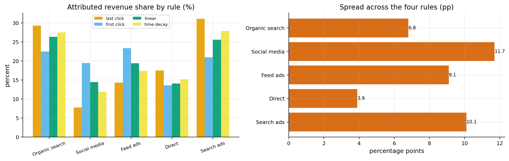
How to Run
# 1) Install dependencies (Python 3.8+; this course was tested with 3.9)
pip install -r code/requirements.txt
pip install -r code/lecture03/requirements.txt
pip install -r code/lecture04/requirements.txt
# 2) Lecture 2: data types samples (line-by-line comments)
cd code
python run_all.py
# 3) Lecture 3: data preparation samples (line-by-line comments)
cd lecture03
python run_all.py
# 4) Lecture 4: descriptive statistics and visualisation samples (line-by-line comments)
cd ../lecture04
python run_all.py
# 5) Lecture 5: machine learning samples (line-by-line comments)
cd ../lecture05
python run_all.py
# 6) Lecture 15: big data in marketing samples (line-by-line comments)
cd ../lecture15
python run_all.pyEvery lecture uses a fixed random seed (L2 20260917, L3 20260317, L4 20260417, L5 20260506, L15 20261216),
so a run produces exactly the same samples and figures. Lecture 15 draws all of its samples from
one shared random stream: run run_all.py, not a single script, or the numbers after that script shift. The provincial boundary file for Lecture 4 is downloaded
automatically on first run and cached to data/lecture04/china_provinces.geojson; if the network is unavailable,
the map falls back to a centroid bubble map and the pipeline still runs to completion.
Notes
- Line-by-line comments: every line of code in the Lecture 2, Lecture 3 and Lecture 4 programs, as well as the code examples in the slides, carries an explanatory comment;
- Data provenance: all samples are synthesised by the programs (simulated orders, customers, income, city panels, corpora, networks and so on); they contain no real personal data and may be used freely for teaching and Project 1;
- Slide mapping: L2 figures correspond to frames 10, 12, 13, 15–20 and 23; L3 figures correspond to frames 15, 22, 29, 30, 38, 41, 46, 52, 57, 62, 68 and 72;
- Extension: point the data source in
l3_01_quality_profile.pyat your own table and you immediately get the data quality report required for Project 1.